CS180 Project 1: Images of the Russian Empire
View the notebook →How align.py works
For the sake of modularity, we'll implement the functions in align.py. With L2, the lower the score, the greater the alignment between two images. With NCC it's the reverse: the greater the score, the greater the alignment between two images. To make it easy for our align function to use switch between loss functions, we define neg_ncc, which just returns the negative of what ncc would.
crop(img, frac=0.1) trims a fixed fraction off each edge before an image is scored against another. The glass-plate scans have a black border/frame around the actual photo, and that border isn't identical between the R, G, and B plates. If we scored the uncropped plates, the loss function would end up rewarding whatever shift best lines up border artifacts rather than the actual scene.
single_scale_align(moving, fixed, window, loss) does brute-force exhaustive search. For every integer displacement (dy, dx) with dy, dx in [-window, window], it shifts moving with np.roll (which wraps pixels around the border) and scores the shifted image against fixed with the chosen loss function, keeping whichever (dy, dx) scores best.
pyramid_align(moving, fixed, ...) is what we need for full-resolution TIFFs. Since exhaustively searching a window wide enough to cover those images' true offsets at full resolution would be too slow, pyramid_align recursively downsamples images by half (sktr.rescale(..., 0.5, anti_aliasing=True)) until the smaller dimension drops below min_size=200. It then does one exhaustive single_scale_align search with a wide window (big=15) at that tiny base resolution, before unwinding one pyramid level at a time: at each level it doubles the offset estimate inherited from the coarser level (since one pixel at half-resolution corresponds to two pixels at full resolution) and refines it with a small exhaustive search (small=3) local to that level. Because each level only needs to correct for the rounding/downsampling error introduced at that step, this stays cheap.
Part 1: Single-scale alignment on the low-resolution JPEGs
cathedral.jpg, monastery.jpg, tobolsk.jpg
Before building the pyramid, we validate our exhaustive-search strategy on its own using single_scale_align directly on the three small JPEGs. We search every integer displacement (dy, dx) in [-15, 15] (961 candidates) and score each with both loss functions.

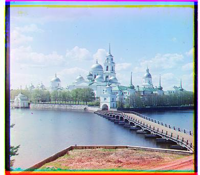

Part 2: Multi-scale pyramid alignment
Now we try pyramid_align on the full-resolution images. Offsets below are (dy, dx), green and red relative to blue — shown here using gradient magnitude + L2, the final method explained below.


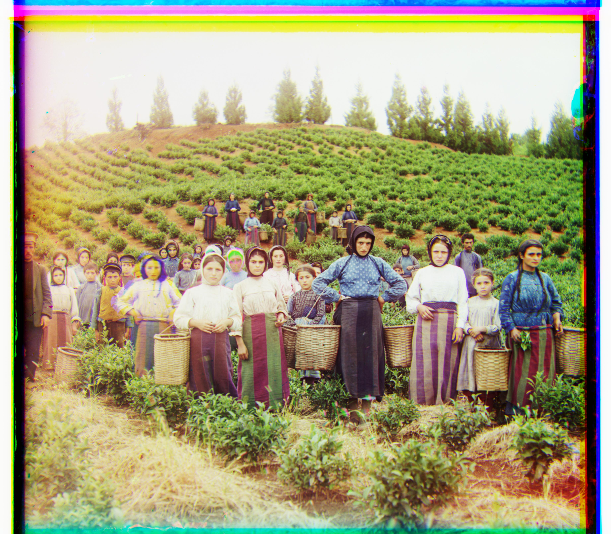
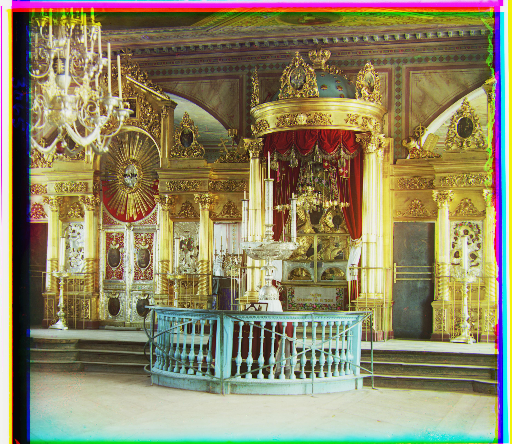
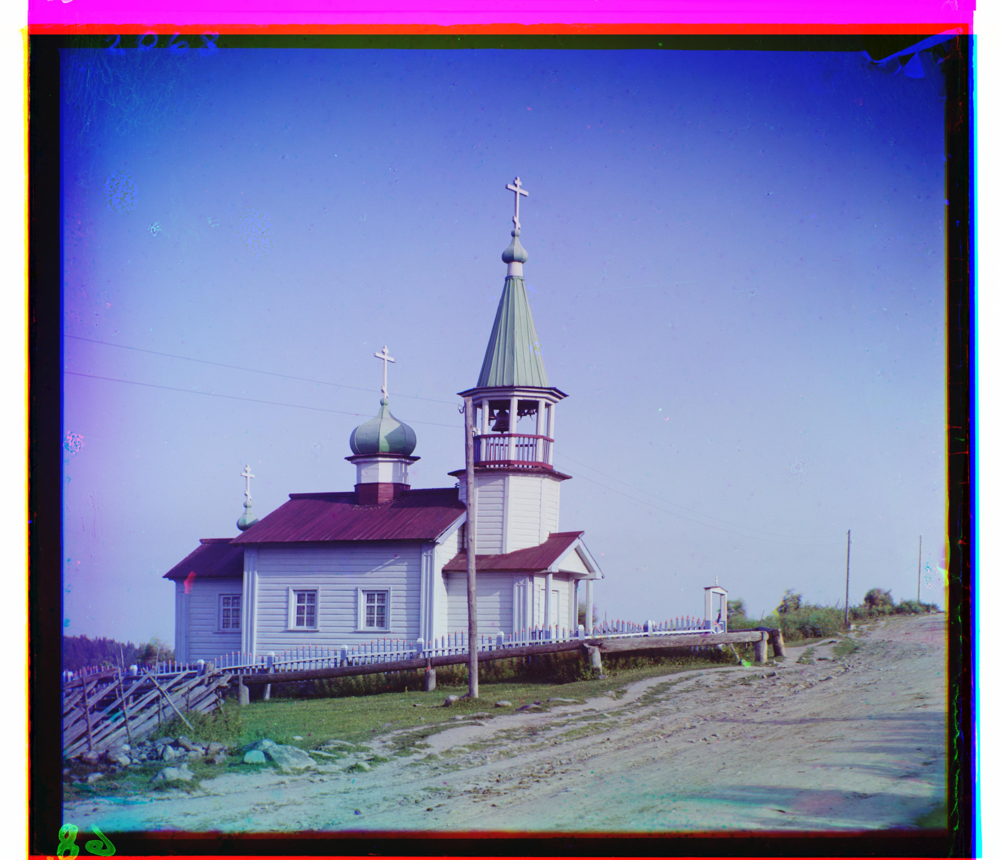

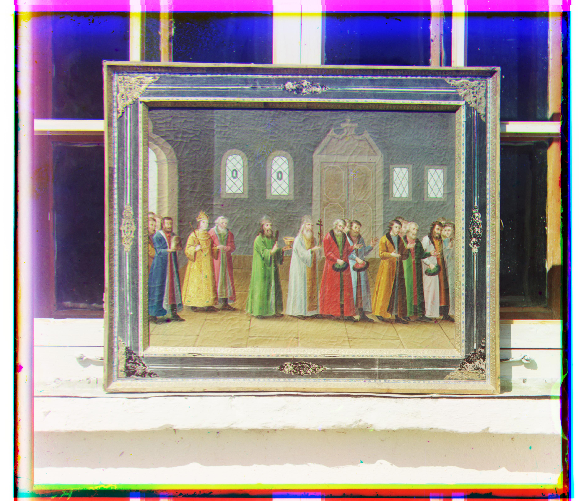
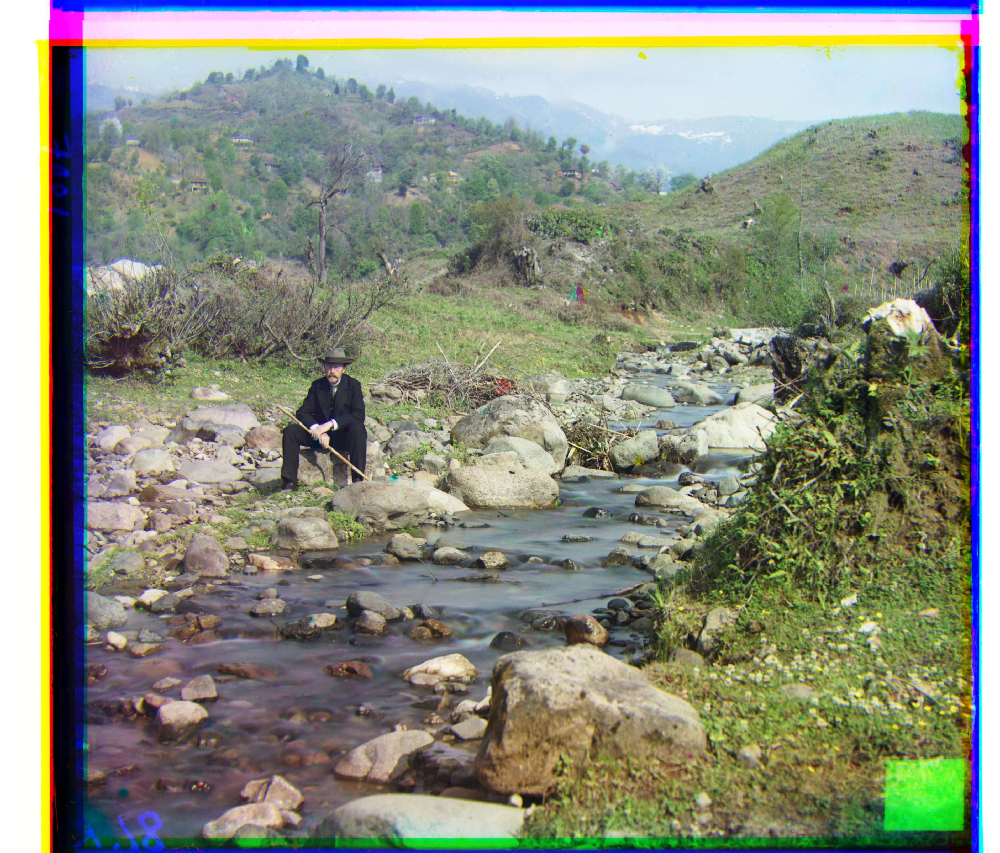

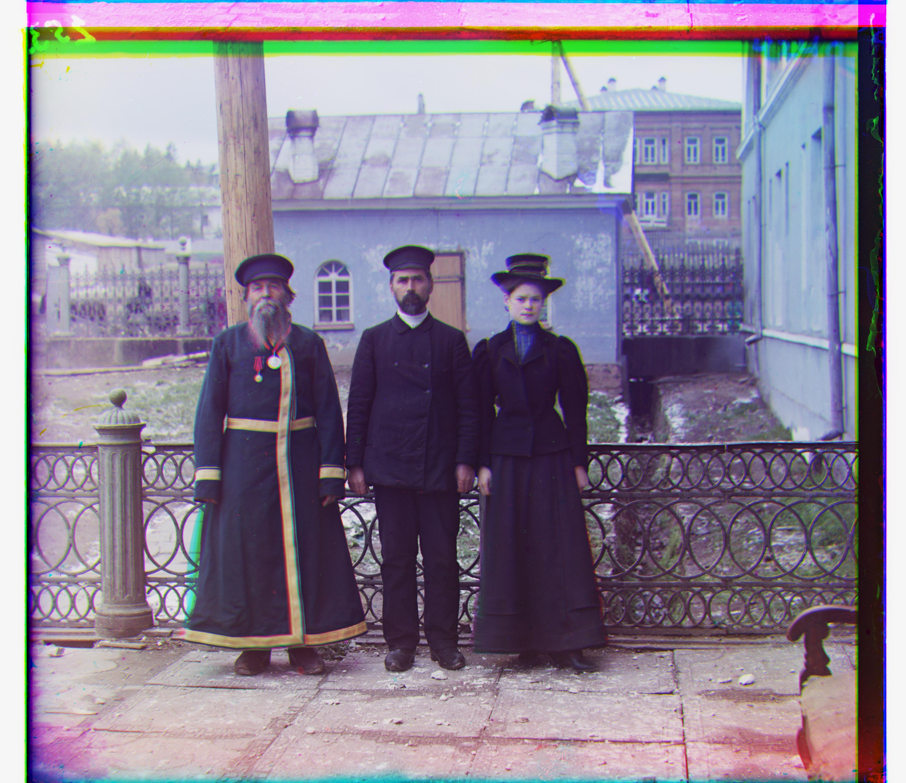

Interstingly, we see that L2 does well for all files except church.tif, whereas NCC performs well for everything besides emir.tif. Why is this?
church.tif is dominated by large flat regions of similar brightness (sky/water). L2 is pulled towards whatever shift that minimizes this disagreement, which isn't necessarily what lines up the church and shoreline best. NCC subtracts the mean and normalizes, so it's invariant to the brightness gap between channels.
As for emir.tif, the emir's robes is a busy, fine pattern that when downsampled aliases into high-frequency noise. Since NCC is a pattern-correlation measure, it's vulnerable to false correlation peaks. L2 survives because the robe is much darker/higher-contrast in R than in B, and in G than in B, so raw-intensity matching has a well-defined true minimum.
Gradient-based alignment
Let's try our best to make one method work everywhere. One way we can do so is to align on edges instead of raw pixels. We define gradient_magnitude and use that to create gradient_pyramid_align. gradient_magnitude creates an edge map — a new image that's bright wherever the original is changing fast (edges, outlines, textures) and dark wherever it's flat.
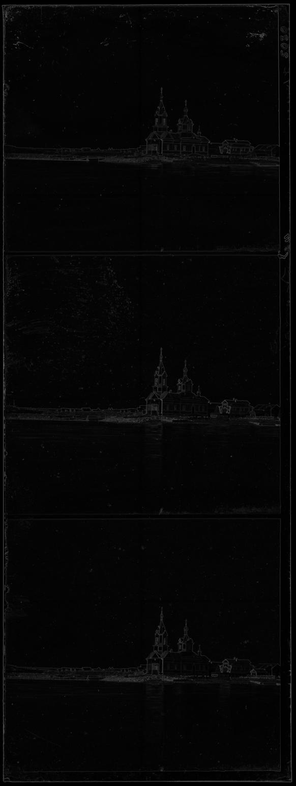
Does aligning on edges fix both failure cases?
Turns out yes. church.tif under L2 now matches NCC exactly — (58, -4) either way, instead of L2's old (64, 267). As for emir.tif, L2 and NCC now agree with each other too, both landing on (107, 40), instead of the old split ((103, 57) vs (416, -455)).
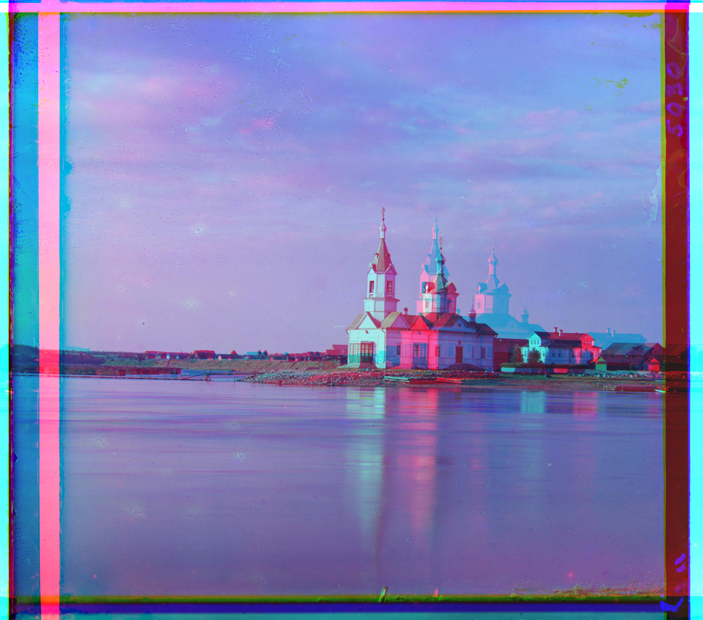
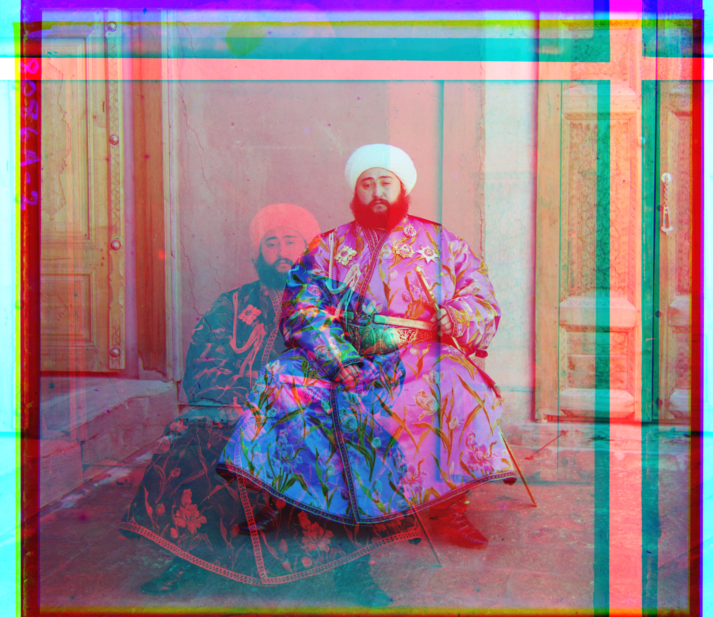
Picking a loss function for the final export
We ran gradient_pyramid_align with both l2 and neg_ncc on all 14 provided images and compared the offsets and runtime (informally). Every image landed on the exact same offset under both losses. But there's a difference in speed: L2 was consistently about 2x faster on the big TIFFs (since NCC also has to ravel, mean-subtract, and normalize at every candidate shift). Since they tie on quality, we go with gradient magnitude + L2 for the final export.
Part 3: Results on self-selected images
We also grabbed 3 glass-negative triple-frame scans from the Library of Congress's Prokudin-Gorskii collection ourselves:
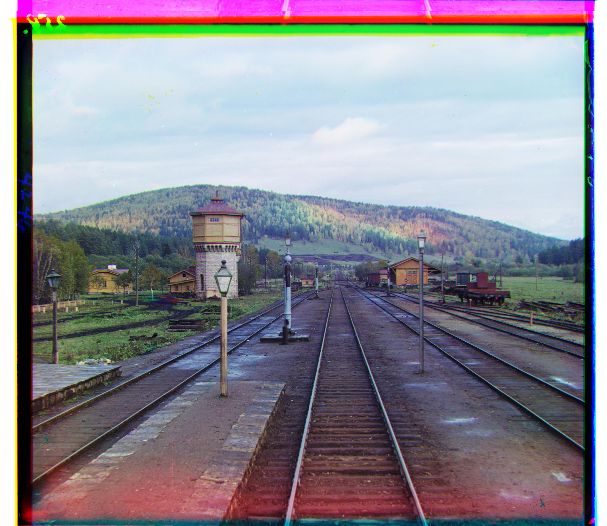
G=(66, 9) R=(140, 6)
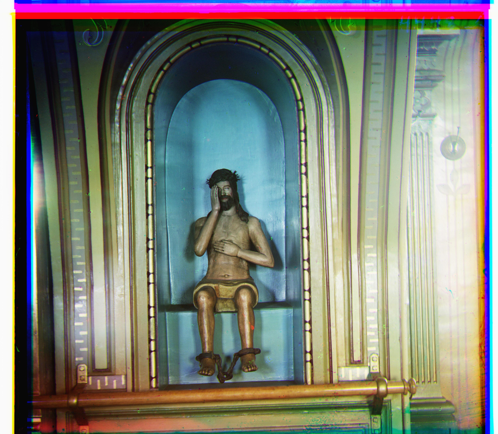
G=(69, 25) R=(143, 37)
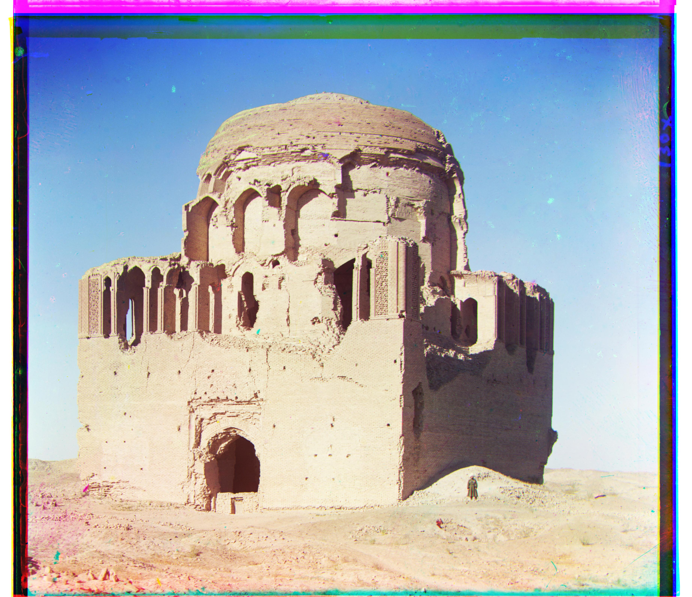
G=(27, 9) R=(70, 11)
Note on AI Usage
Algorithms were written manually. Explanatory notes were drafted manually. I used Claude for help with debugging, structuring the notebook, polishing the writing, creating a webpage from the notebook, documenting align.py, and writing minor helper functions.